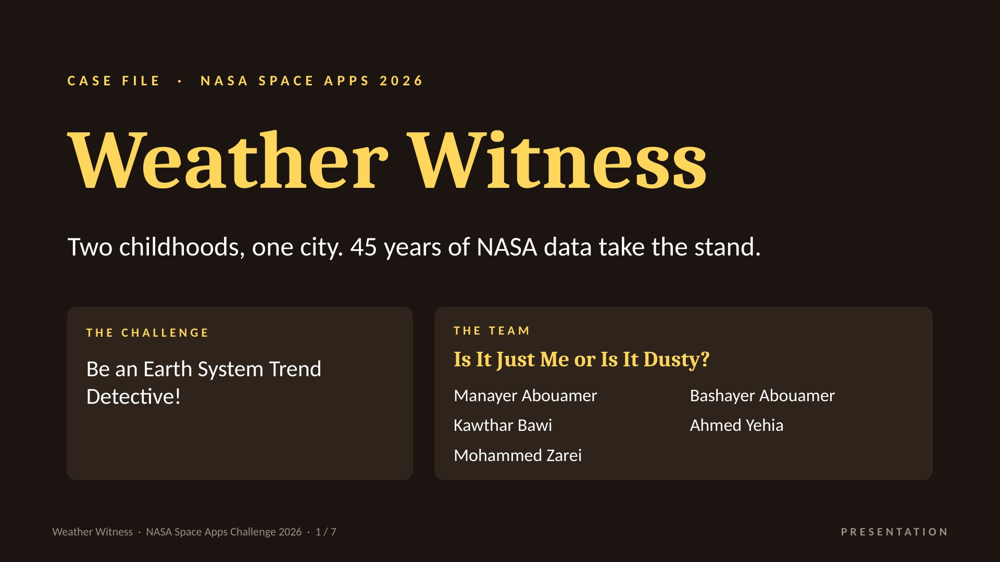
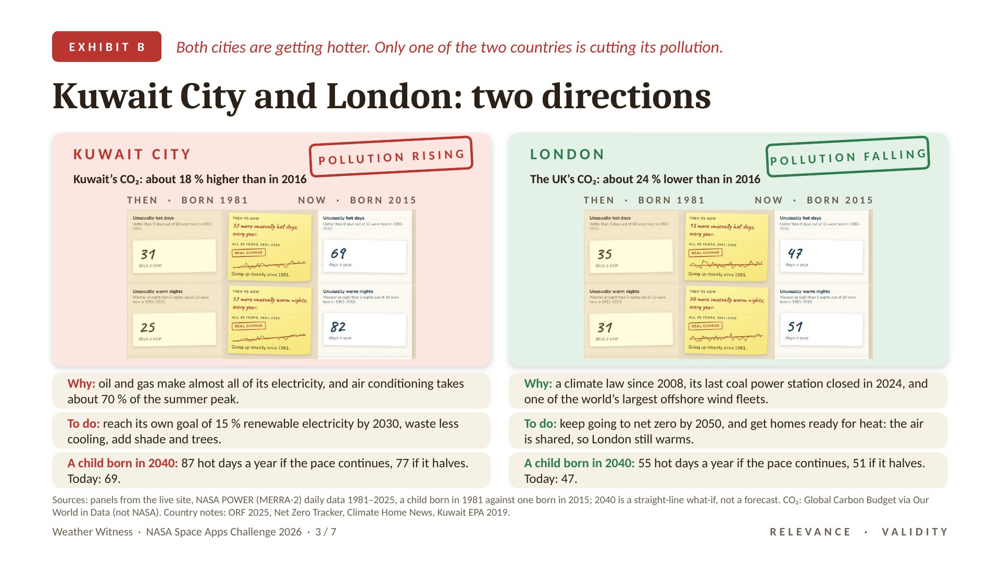
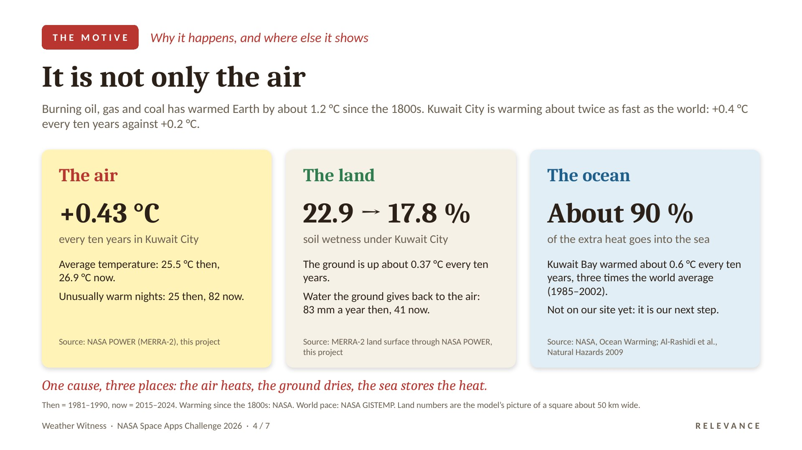
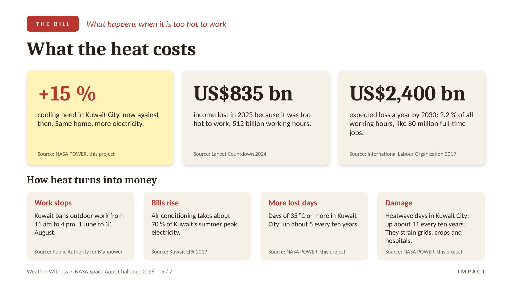
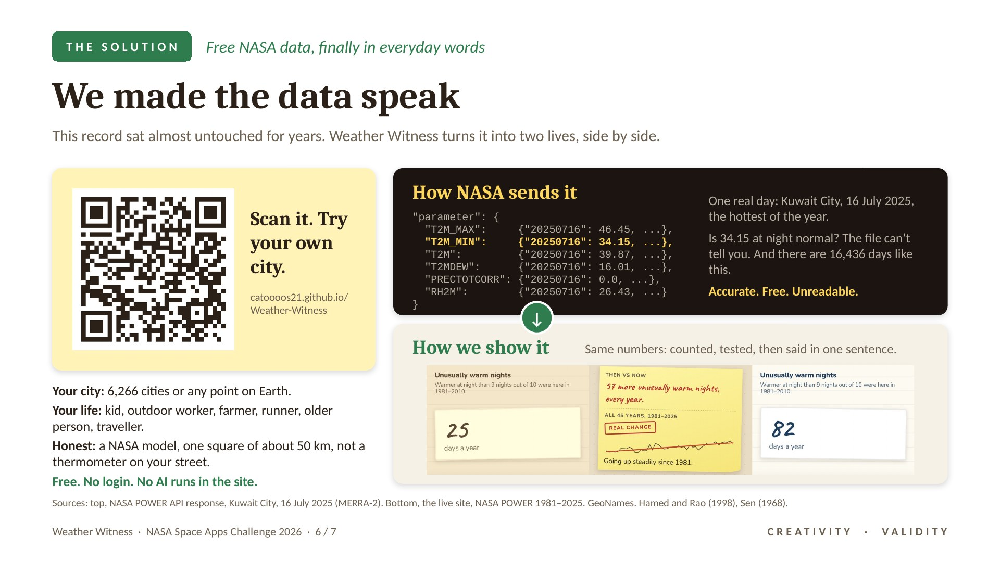
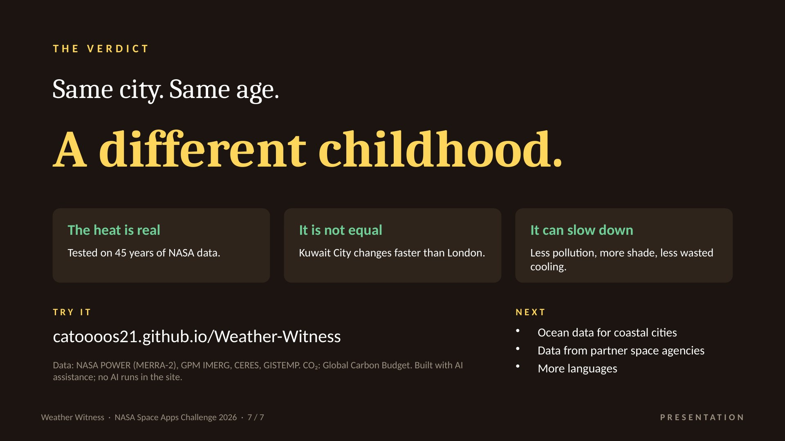

WEATHER WITNESS · NASA Space Apps Challenge 2026 · Team “Is It Just Me or Is It Dusty?”
Open the live site






1 / 7
PDF
Use the arrow keys, or click the slide. Slide 2 is a 23-second video with sound: press play if it does not start.